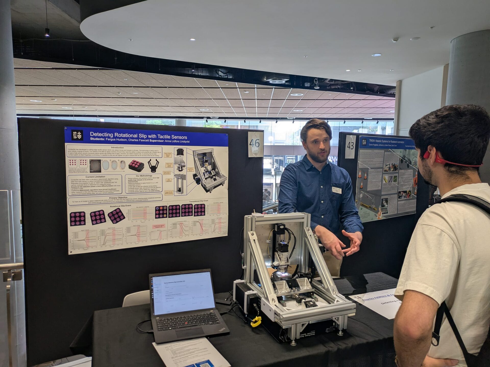
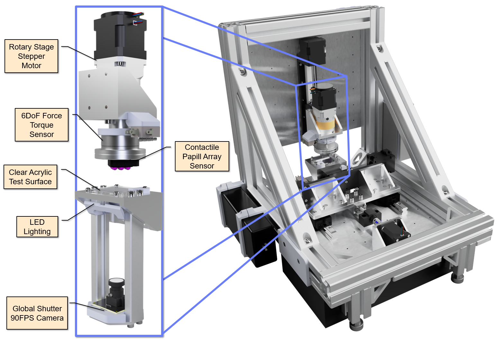
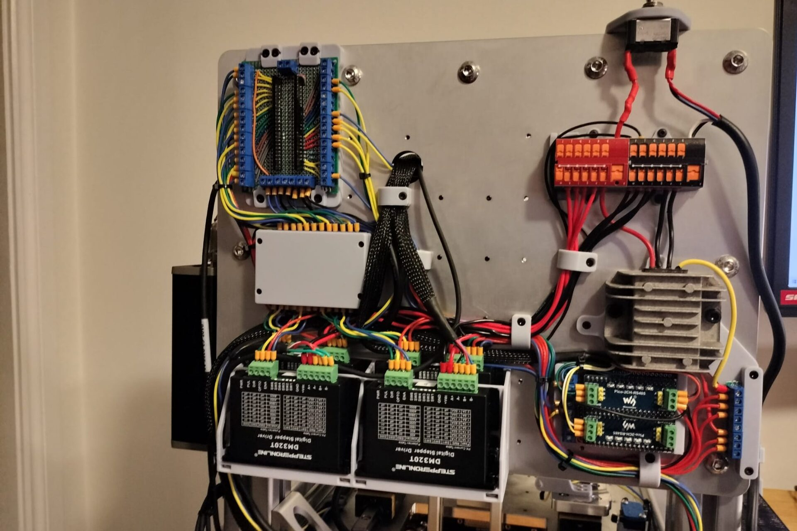
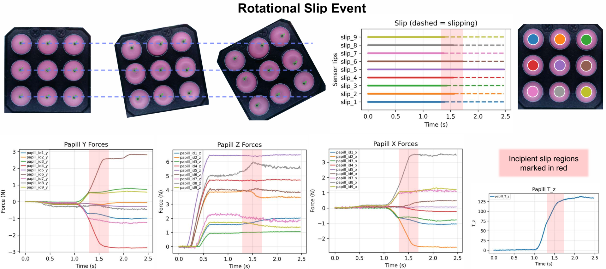

Year-long industry-partnered capstone with Contactile, developing a precision rotational slip detection rig to characterise their Papill Array tactile sensor. Covers the full engineering lifecycle from requirements through design, build, testing, and documentation.
Add project summary here — context, motivation, and what was achieved.

Final year capstone showcase presentation
Add rig design description here — mechanical design decisions, key components, and design challenges.


Labelled rig assembly and electronics panel
Add documentation description here — deliverables produced, standards followed, and any key documentation outcomes.
Add results description here — what the rig successfully measured, sensor performance, and key findings.

Rotational slip event — sensor tip data and 6DoF force plots